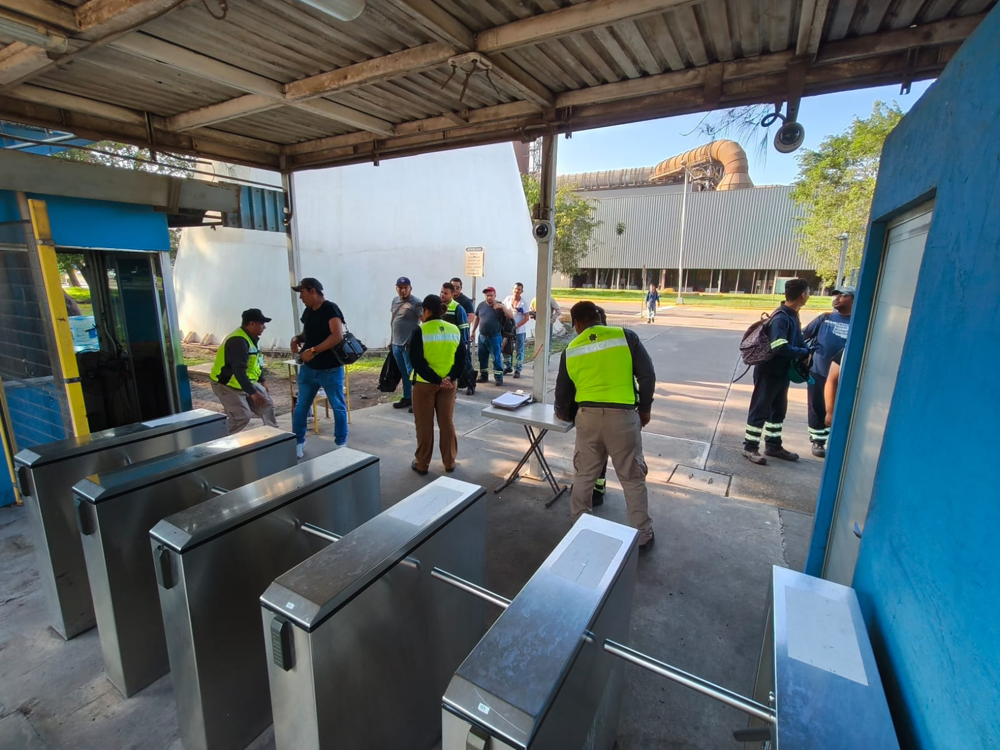
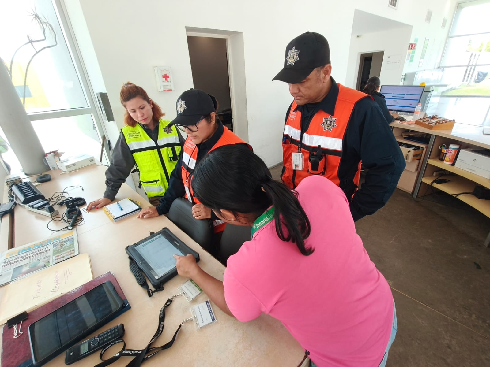
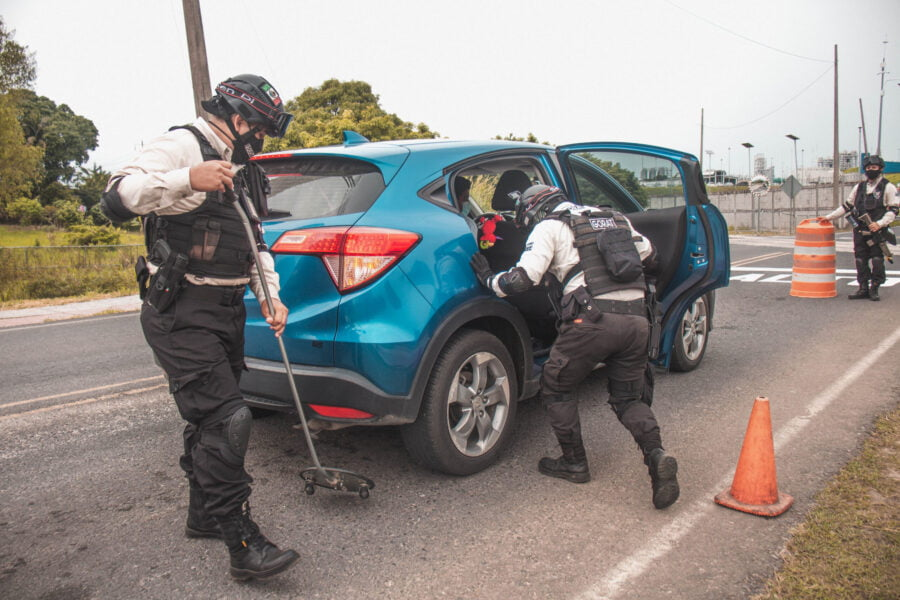
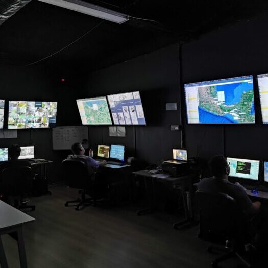
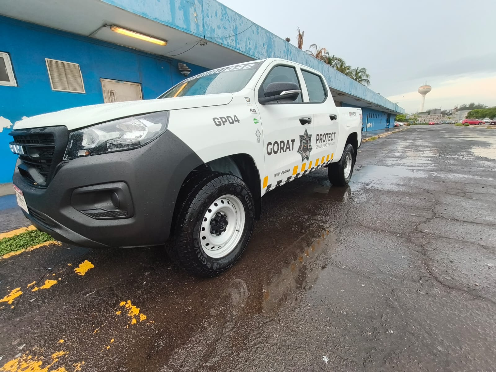

Seguridad física en sitio enfocada en vigilar, salvaguardar y proteger bienes inmuebles y al personal que labora en ellos. Nuestros elementos operan bajo una disciplina de respeto, calidez y estricto control operativo.

Servicio de protección personal de élite bajo el concepto Close Protection Intelligence Operator (CPIO). Combina la capacidad de reacción física con herramientas avanzadas de inteligencia táctica.

Resguardo y seguimiento en tránsito de vehículos de carga con cobertura en toda la República Mexicana. Unidades de custodia patrulla enlazadas directamente a nuestros centros C4.

Nuestra infraestructura tecnológica es uno de los mayores pilares de fuerza. Contamos con software propio de rastreo y monitoreo de CCTV para coordinar toda nuestra red operativa.

Servicio premium a través de nuestra división especializada TransportaGorat. Ofrecemos traslados seguros con choferes altamente capacitados en conducción defensiva y evasiva.